What the Leave War becomes
Your 22 points and your round 1 answers, all drawn into the real app. "Today" pictures are the app as it is; "proposed" pictures are the same real screen with the new parts drawn in, marked and numbered in pink. The sample squadron was set up through the app's own buttons, with the clock held at Thu 8 Jan. Your colleague's app is shown on made-up people, its squadron name replaced. Tap any picture to enlarge it. A second reviewer checked this plan against your rulings before you see it.
In one minute
- One grid, read at a glance. The year grid stays. A whole day's box fills its cell; a half day's box fills its half, the morning on top and the afternoon below.
- Your own leave first. "My leave" sits on the top of the page; tap a name for that person's leave by year; tap a date for that day.
- One list to decide. An Approvals list with its count; "Approve what I enter" for your own entries.
- Locks instead of stages. Draft, bidding, closed and published go. A lock with its reason is the only thing that stops a member, and every request shows where it stands, live.
- Also: a document on every entry, a Management group, holidays by file, a list of events, and the bell telling a member every decision.
The new page

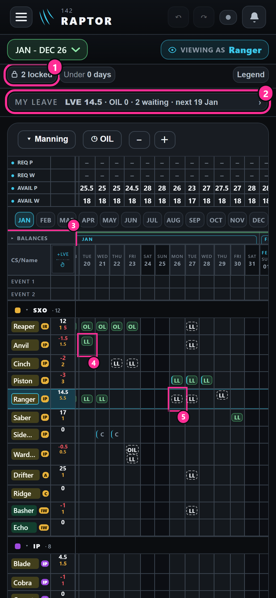


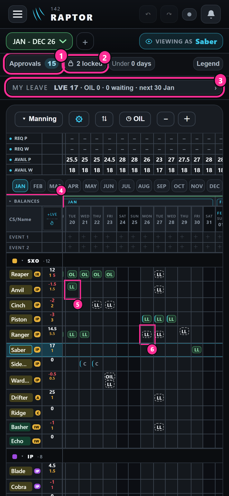

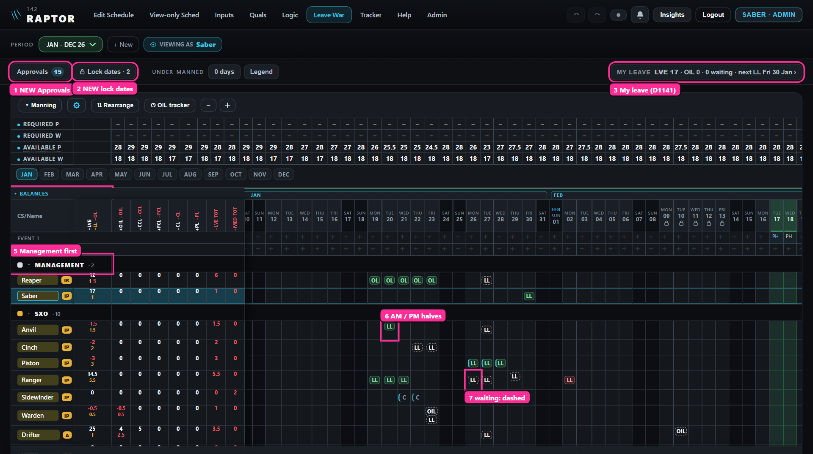
Round 2 · your answers
- 1 · A: the year grid stays.
- 3 · yes: Ack goes; the window decides with Approve · Refuse. And every document uses the app's one Document button, the upload arrow and "Document", as a medical input has it. (The window pictures further down still show the paper clip I drew; the build uses your button.)
- 4 · B, your way: rows keep their height; a whole day's box fills the cell and a half day's box fills its half, its letters smaller. Measured at your iPhone's size: a half's letters 6 points, a whole day's 8, as today.
- 2: asked again below, on cells drawn your way.
Question 2 again, the one case your answer to 4 leaves open, then the first two of how it runs.
2How a cell shows where it stands, drawn your way your points 6 and 9
You couldn't tell a half day from a whole day. Now a whole day's box fills the cell and a half's fills its half, so the size tells them apart. What is left is what the colour says.
- A · the colour is where it standsrecommended
Green approved, red refused, a waiting one in a dashed outline; the letters say the type; leave filed on the Inputs page keeps its cyan left edge. In this app a colour means a status: a colour per leave type would spend green (holiday, OIL earned), red (a clash), amber (a manning row short) and orange (a No Leave day). - B · as today, a waiting one in plain letters.
- C · a soft tint per leave family (leave, OIL, medical, course), where it stands by its edge: solid, dashed, struck through.
- D · your colleague's: a colour per type, a waiting one outlined with a dot.
You asked about the row "Filed on the Inputs page by a member, waiting". It is a leave a member files on the Inputs page instead of bidding on the Leave War. Today it lands on the war already approved, so it never waits. The row only shows how it would look if you answer question 6 yes.
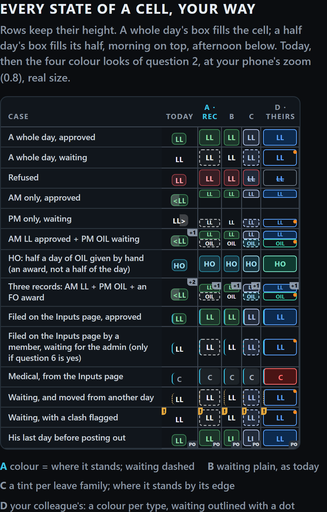
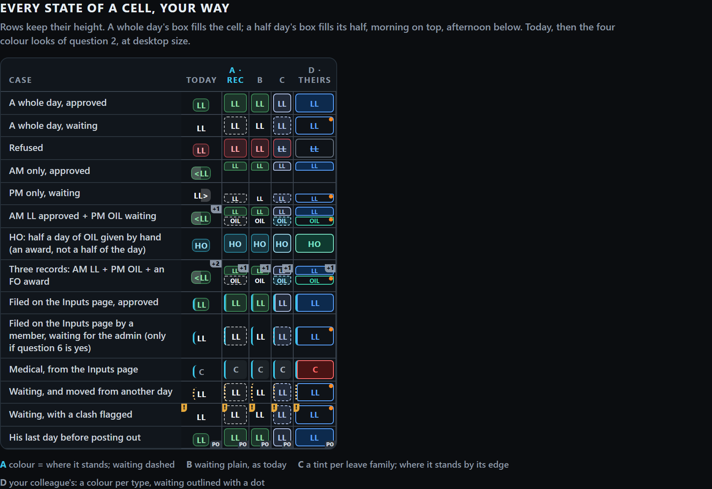
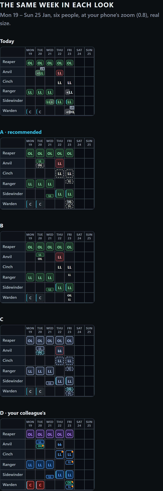
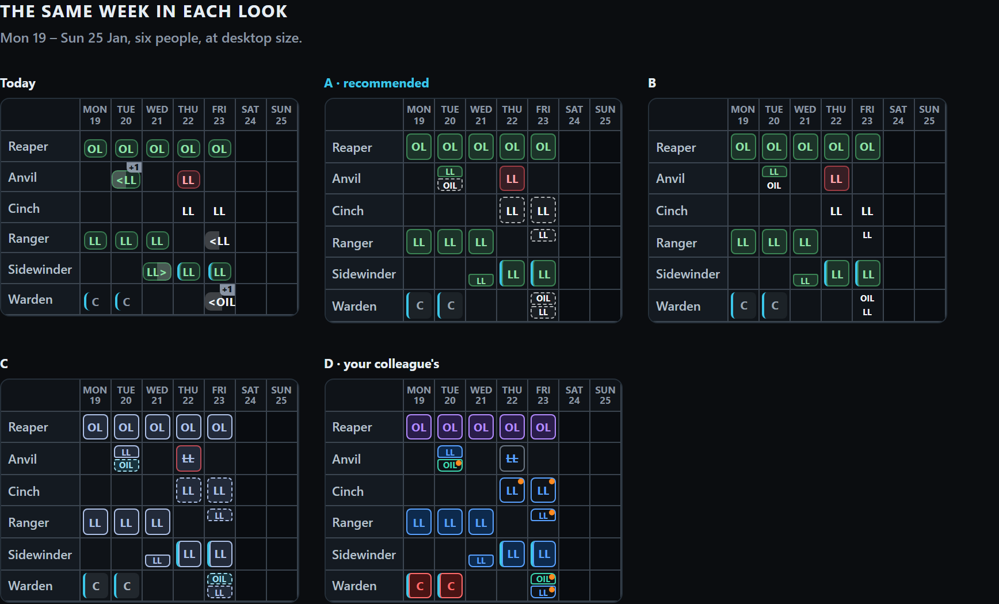
4bTwo whole-day entries on one day from your answer to 4
Rare: a leave and an OIL award you give by hand (FO) on the same day. With halves filling the top and the bottom, two whole-day entries one above the other would read as a morning and an afternoon.
- A · side by side, each the full heightrecommended
A whole day is always full height and a half is always a top or bottom half, so the rule never bends. Their letters are as small as a half's. - B · one above the other, as your round-1 ruling on two entries said. It reads like a morning and an afternoon.
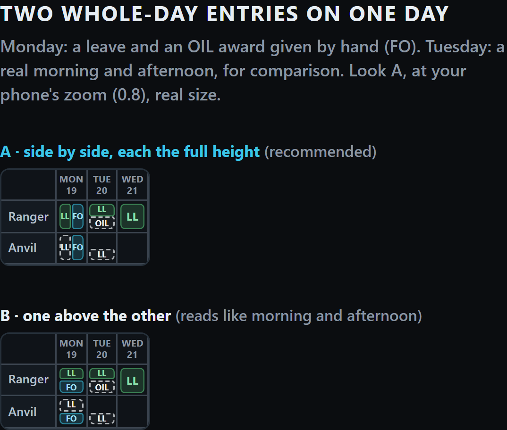
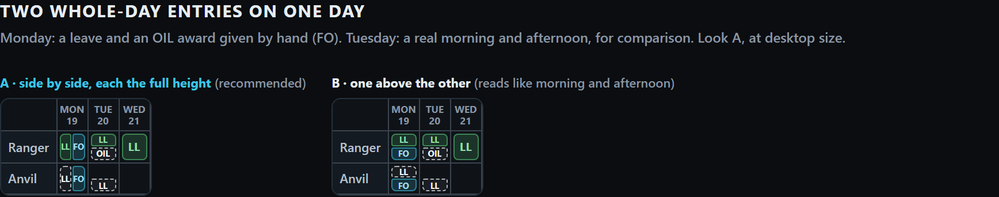
5The stages go, and what takes each one's place your point 17
Recommended: they go. A member sees every request's state live, and a locked stretch's reason in the day panel. No separate "being bid / being approved" label: the lock's reason says it.
| What the stages do today | What takes its place |
|---|---|
| members bid only inside the bidding window, while the war is open | a member adds, changes or removes his own leave on any date not locked and not yet past; an admin at any time |
| the bidding dates (1 Jan – 31 Mar) | the lock list; a new period starts locked whole ("Not open yet") and you open months by shortening that lock |
| the green outline round the bidding dates | gone; a locked day keeps today's quiet dim, with a small lock on its date |
| an admin decides in every stage but draft | an admin decides at any time |
| while bidding is open a member can re-bid even his own approved day; once published, approved leave is frozen even for an admin | a member never moves or deletes his approved leave himself (he asks); an admin can change it any time, and the member is told by the bell |
| a member adds remarks to his approved leave only once published | at any time |
| a member moves his own bid while bidding is open | while it waits and its days are not locked |
| the dotted "moved" mark, only after bidding closes | on any move of a leave already approved |
| Undo takes back a stage move | Undo takes back adding, changing or removing a lock |
| the page opens on the war being bid on | it opens on the first date from today a member may bid on; with none open, on today |
| the clash note says "Step the war back to Bidding Closed" | "Change the approved leave" (an admin can at any time) |
| your flow: create → open → bid → close → publish → remarks | create (locked whole) → open months → bid and decide live → lock "Approvals in progress" if you want → text the squadron |
| a No Leave day only colours its column (your choice, so urgent leave goes through) | unchanged; a lock is how bids are stopped |
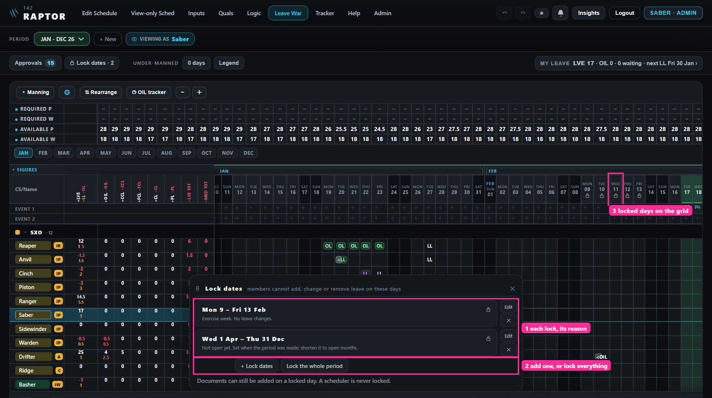
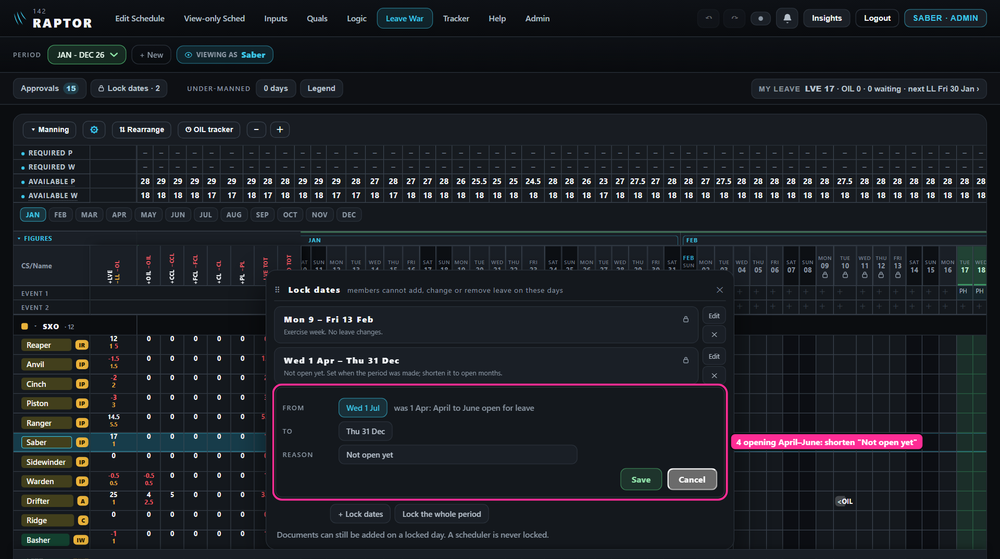
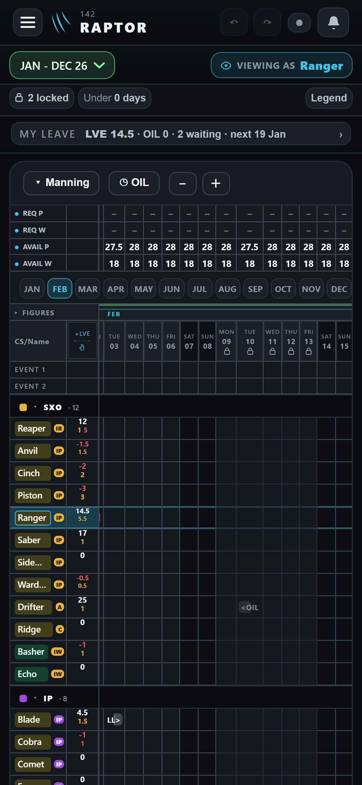
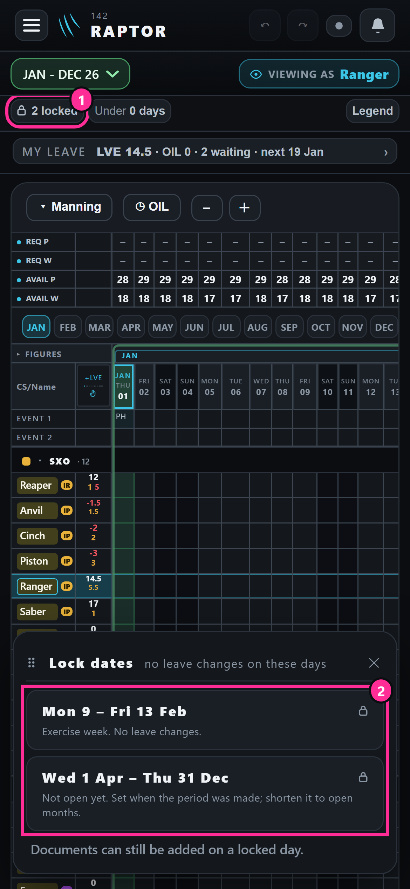
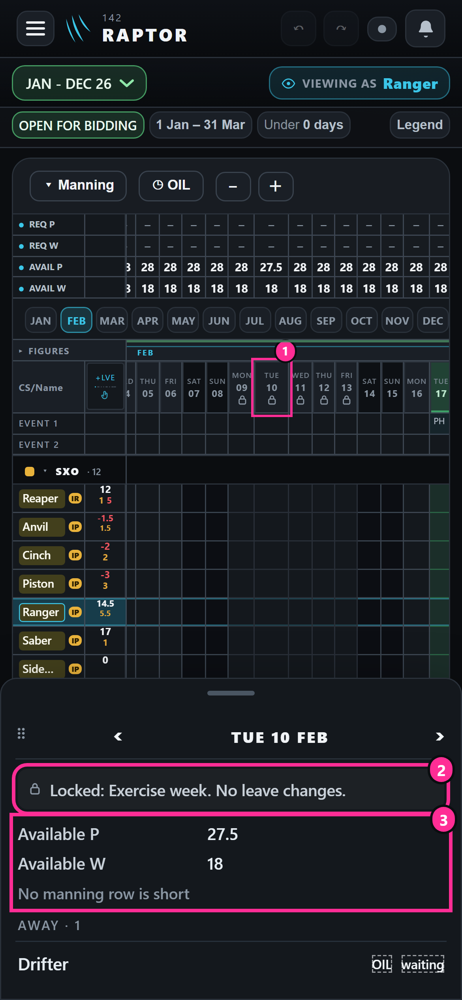
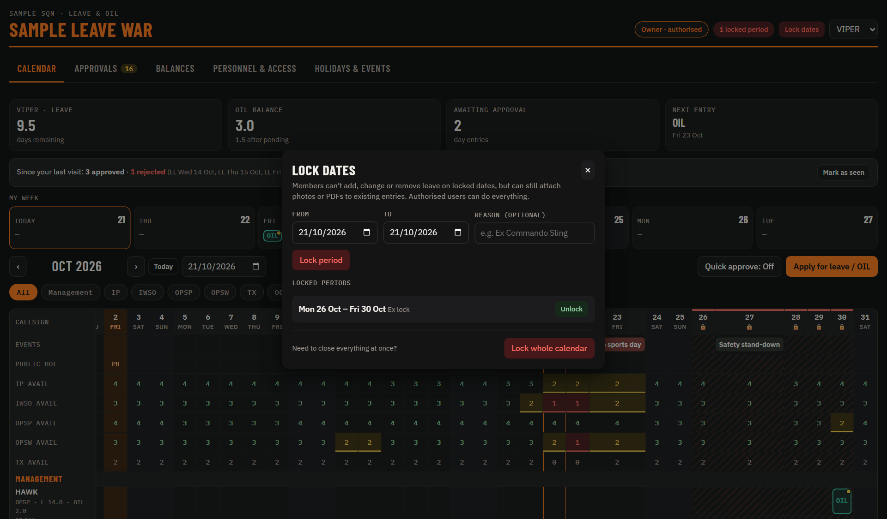
6Leave filed on the Inputs page: under the locks, and in Approvals? found by the reviewer
Today a leave filed on the Inputs page lands on the war already approved ("asked verbally, told yes"). So a member stopped by a lock could file the same leave there, and it would never reach your Approvals count.
- A · a member's Inputs-page leave obeys the locks and waits in Approvals, like a bidrecommended
An admin's lands approved, as "Approve what I enter" does. It changes the 19 Sep 26 arrangement and your flow's "later changes mainly by the member through inputs"; your point 13 asked for the count to rise "for any new inputs that is not approved". - B · as today: Inputs-page leave lands approved and is not stopped by a lock.
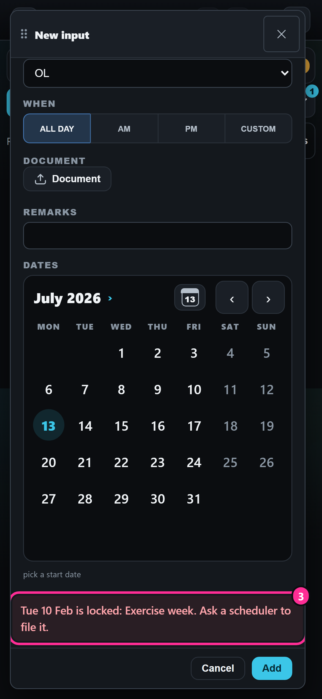
2A 4bA 5A 6A, or with anything you want changed.After round 3. Shown now so you can see the whole picture.
7Quick approve, or approve all for a period? your point 10
- A · no quick-approve switch; the Approvals list gets a dates filter, and "Approve all" approves what it showsrecommended
That is "approve all for a selected period". The grid's drag-select stays. A switch that makes a tap approve is easy to leave on, and then a tap meant to open a cell approves it. - B · add the quick-approve switch as well.
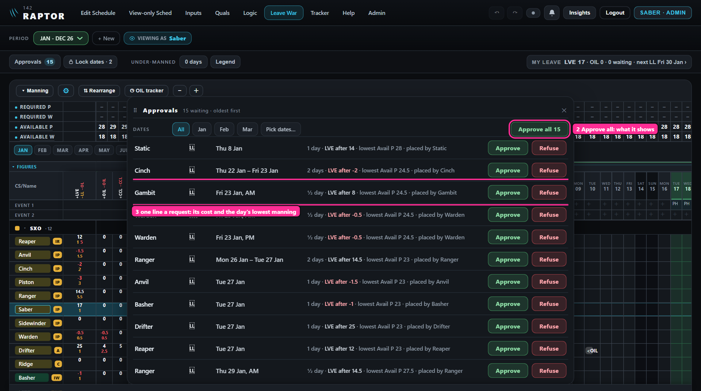


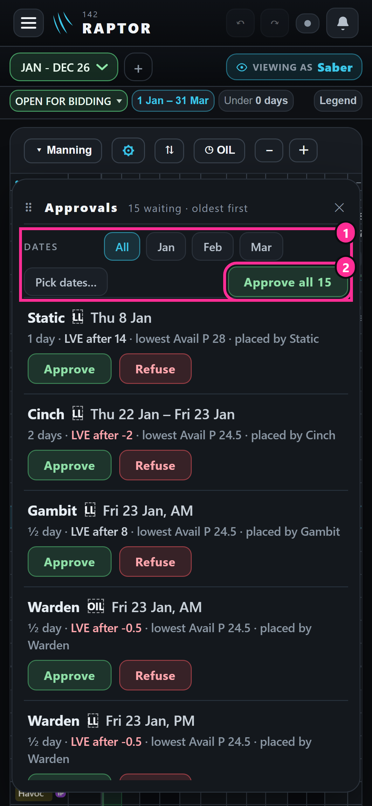

8The balances list, and its name your points 18 and 19
The list you ask about is already there: the "Figures" drawer above the names, every figure for everyone.
- A · no second list; the drawer, its heading and the person window are called "Balances"recommended
The columns of days used stay inside it, as today. - B · keep the name "Figures".
- C · a Balances window of its own, as your colleague's tab.
9"Approve what I enter": off each time the window opens? your point 5
- A · off each timerecommended
So entering a member's request for him stays a normal waiting request unless you tick it. - B · it remembers your last choice.

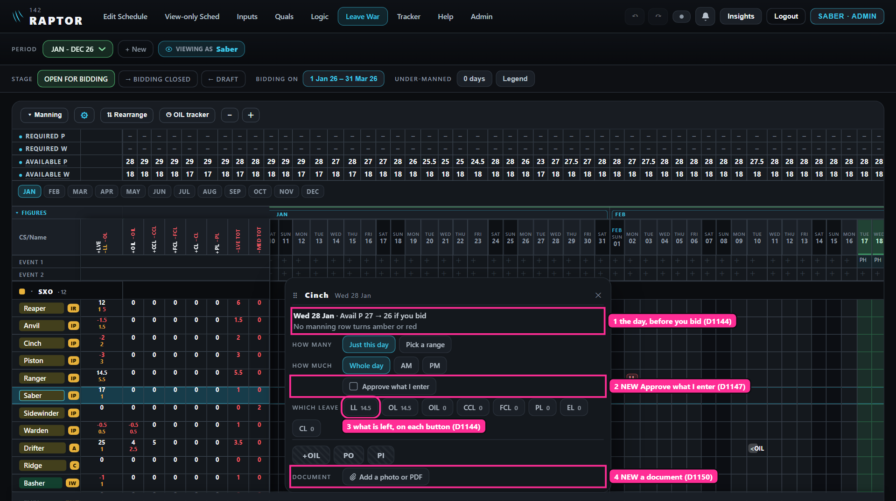
10Where Approvals and Lock dates open
- A · as chips in the row where the stage wasrecommended
On a phone in its second line, so no line is added. - B · behind the ⚙, out of the top row.
After round 4.
11The day panel's rows stacked, one a line
- A · yesrecommended
Names in one column and figures in a second, as you asked for the bid window; a locked day's reason as its first line. - B · in one row, as round 1 drew it.


12Management: a tick on Quals, or picked on the Leave War? your point 8
- A · a Management tick column on Quals, added as a group on the war and standing firstrecommended
Quals stays the one place a man's facts change, and the war's groups already come from Quals' columns. A man in Management still counts in his own seat. - B · a list of people picked on the war itself.


Built in from your points, nothing to answer
A person's leave, by year · points 7, 22


Placing leave · your round 1 answer 4, point 12


A document on every entry · point 12


Events, and holidays by file · point 16


Available P and W · point 15
Already built: tap "Available P" and its window chooses exactly what it counts (crew, CAT, holding, without). Only one line is new.


My readings, yours to strike
- A leave's document is opened by whoever can open the entry, as a medical one is today.
- A bid's document goes with it when it is approved, and stays when it is put back or refused.
- Documents stay in each browser, as medical ones do, until the shared database.
- Approvals is for admins; a member sees his own waiting requests in "My leave".
- The holiday sheet is a CSV file that opens in Excel, its columns in plain words (date, last date, name, short form).
- The holiday import sits on the Calendar window's Holidays list and writes the same record as the war's Event row; the events list is new, behind the war's ⚙.
New notifications, yours to strike
Your notifications list is written (point 12). It holds the 11 the bell sends today, your round 1 ruling, and these six I propose:
- P1 · the day before a leave starts with no document: Your leave · Mon 19 Jan · LL · no form attached yet
- P2 · an admin enters leave on a member's row, ticked approved: Your leave · Mon 9 Mar · LL added and approved · Saber
- P3 · a lock is laid over a member's waiting request: Your leave · Tue 10 Feb · LL waiting · locked: Exercise week
- P4 · months are opened for leave: Leave War · Apr – Jun open for leave · Saber
- P5 · a new request waits (to the admins): Approvals · Ranger · LL Mon 26 – Tue 27 Jan
- P6 · if question 6 is yes, Inputs-page leave decided in Approvals tells him as a bid does.